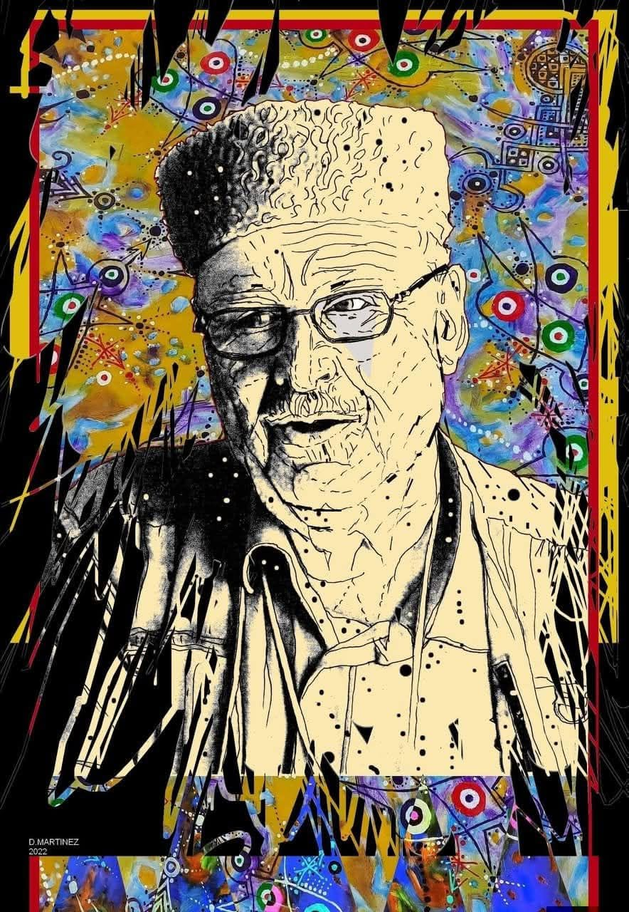

Joyeux anniversaire Vava
À toi,
Vava,
que le temps n’atteint plus,
aujourd’hui pourtant
nous comptons encore les années
comme on compte les battements d’un cœur
qui refuse d’oublier.
Quatre-vingt-onze printemps
auraient fleuri sous tes pas,
et dans chacun d’eux
il y aurait eu ton rire,
ta voix familière,
et cette lumière discrète
qui guidait nos jours.
Les anniversaires ne disparaissent pas,
ils changent simplement de ciel.
Le tien se fête désormais
dans la mémoire,
dans les silences pleins,
dans chaque geste hérité de toi.
Joyeux anniversaire,
Vava,
là où tu es,
et ici,
en nous,
où tu continues de vivre
sans jamais vieillir.
Djamel Metref
At Yenni le 1 mai 2026
Vava (Amar Metref né le 1e Mai 1935, décédé le 12 Septembre 2014) Portrait par Denis Martinez

← Tous les poèmes